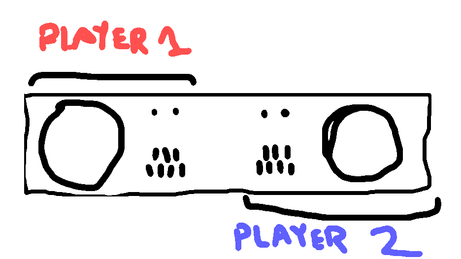
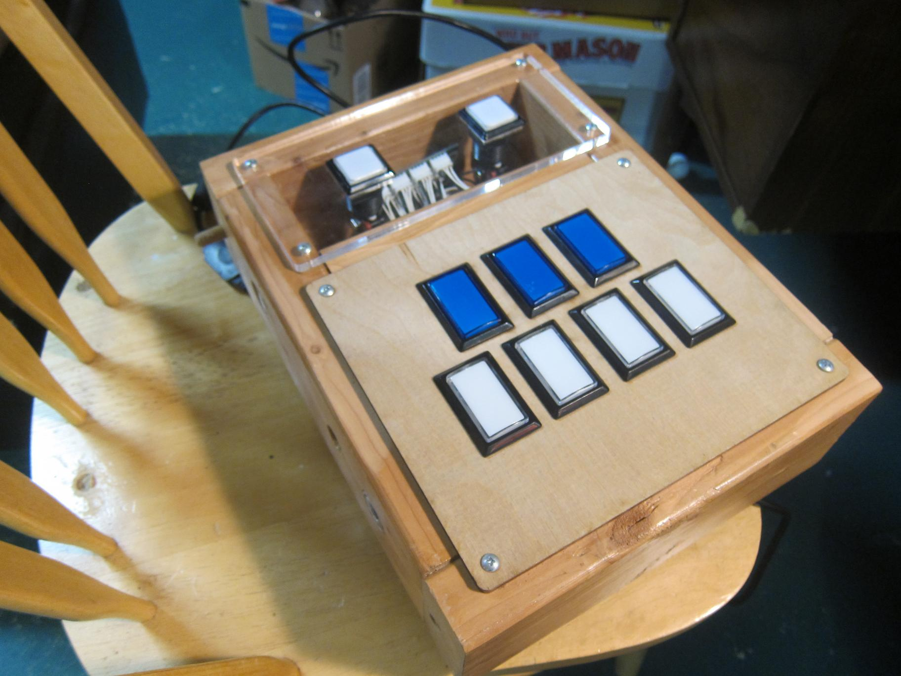
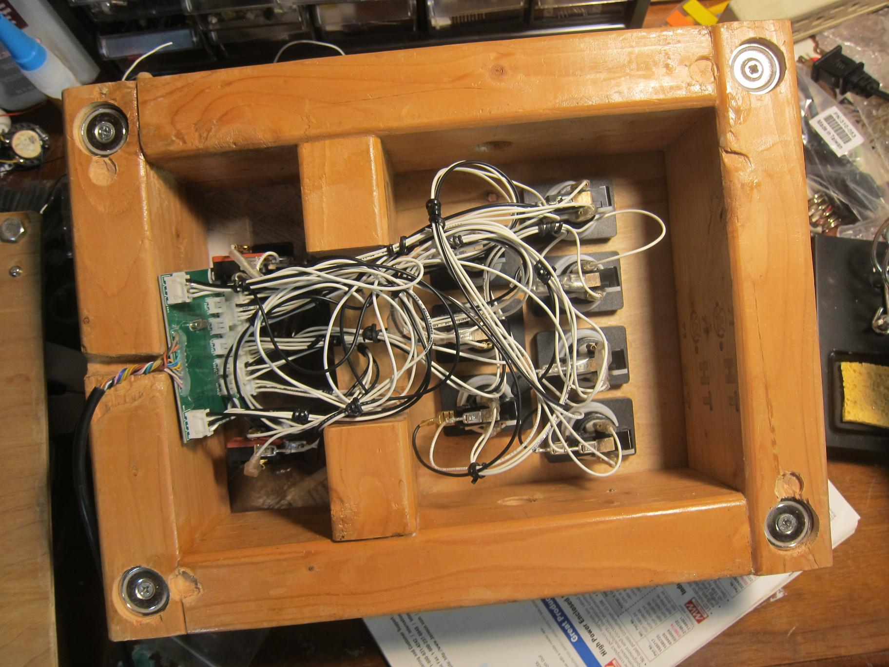
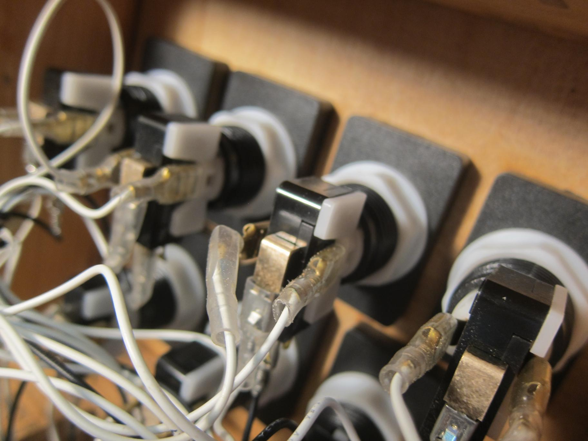
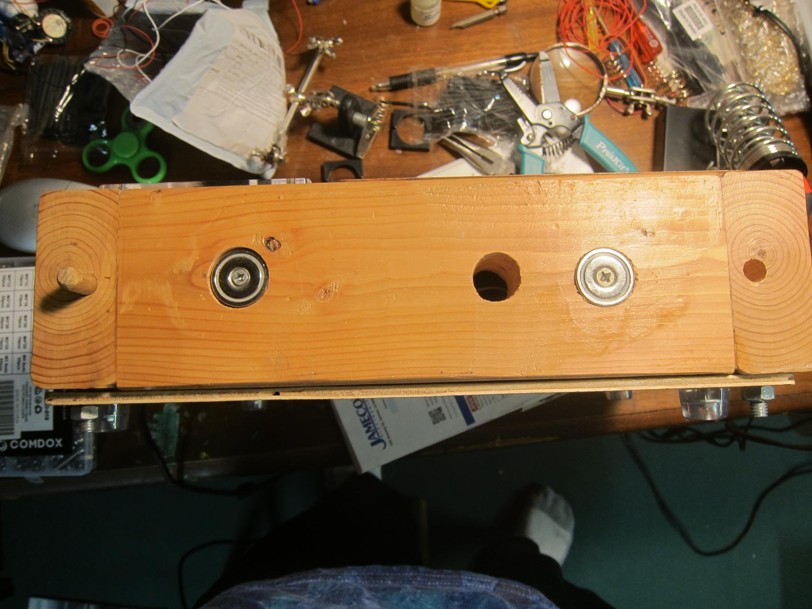
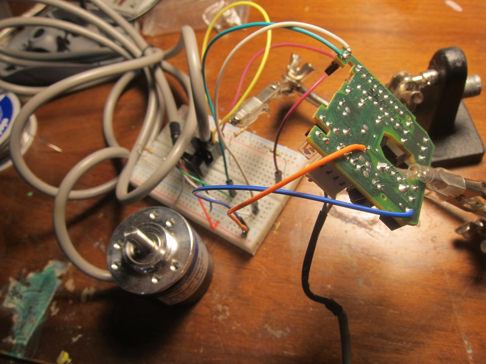
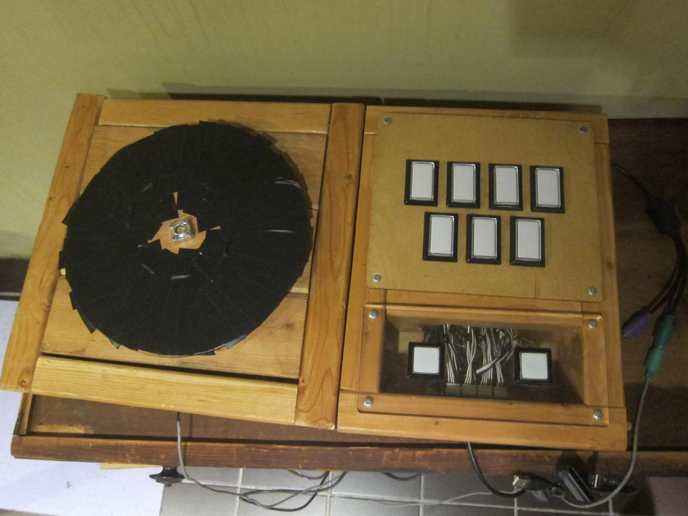

beatmania build
October 2019
In this page, I build a simple beatmania IIDX controller for PC with wood, some plastic from china, some parts from ebay for $200. The guide is based of github project [here][]. My build differs in that only 2x4 is used instead of MDF. My turntable build is also somewhat unique.
Table of Contents
Introduction
Beatmania (1997) is game where you hit buttons to trigger sound effects, usually to some musical effect. It’s no different from jamming on a Akai MPC, except the controls are clearly modelled after a combination of the turntable and piano layouts. And you’re playing a rhythm game so you better be following the rhythm. The game enjoyed enough popularity in Japan where it has spawned a bunch of related games both at Konami and abroad, and it is still being re-released in Japan.1
Then I gave it back. Back to the keyboard age.
A Modular Design

They are two opposite “sides” (Player 1, Player 2) of the machine with mirrored layouts of the controller. A nice feature to have would be to allow the switching between two layouts. I decided to split the turntable and go with magnets! Two matching alignment pins and magnets are used in this build.
The keys
This is the easier half!

Here are the final keys from the top
To create the panel for mounting the buttons, a lazer cutter was used to cut into ¼" scrap acrylic and ¼" plywood. Both take the pounding of a iidx player no problem. An old Controller PCB was scraped from an old DAO from my friend BCS (Thanks!). The wiring for the PCB required Molex JST headers and pins which where crimped with a proper crimper. I only had 18 AWG wire at that time which was slightly to thick, I originally fitted the wires in a different sized cardboard box (which quickly fell apart) so some wire management was necessary.

Of course I had to upgrade the switches to the arcade official! I eventually going to Rakuten, the ebay of Japan and buying the official Sanwa (三和電子）buttons and springs. The buttons in this picture show the cheaper ones I bought from eBay for around $20 including shipping.

As with any mechanical controller, easy access to the panel is desirable. Thus, a magnetic bottom was designed to be easily removable. The bottom also had heavy-duty furniture style rubber feet to prevent slipping during play.

alignment holes and magnets. Meant for mating with the controller! They are on both sides of the controller of course
Turntable
This is arguably the more complicated part of the project. The official and DAO controllers use what amounts to a massive incremental encoders. Additionally the mechanical aspect is a little complicated. I also needed a method to interface with the PC. The DAO controller had an additional microcontroller to convert the encoder to trigger two buttons. I wanted to reuse this component but I accidentally destroyed it by reversing the power pins and frying the Microcontroller. Oops.
I ended up choosing to use a cheap ball bearings from ebay meant for a rotating platter and a rotation encoder with an extended shaft. A face bearing secured the rod to allow rotations to register in the sensor.

Electronically, I was able to hack a mechanical mouse together and reuse the components. This was an old mouse that outputs PS/2 signal. Most modern PCs require a USB adapter. A funny consequence of wiring the sensor in parallel is that I was able to run both the mouse and the wheel at the same time! Apparently, the load resistance of the sensor was enough to register in the microcontroller of the mouse.

In both diagrams, the blue wires to ground, orange to 5V while the green and white are the two signals of the sensor. You can see where the original two opticoders are on the mouse. The area between the sensors is where the incremental disk for the mouse would usually go. The turntable is then tied directly to the X-axis of my mouse.

You see here on the breadboard I attempted to build an encoder myself from scratch. The sensors work but making the disc and connecting the disc somewhere in my controller seemed to be involve more work.

The bearing I used makes for some tricky mounting. I had to try an additional hole into the wooden based and used pliers to screw in some nuts and bolts in the tight space between the TT and the base.
The final turntable itself was made out ¼" plywood with electric tape as the surface. Felt is probably a little better but slip-free rubber is probably the best. The encoder works great.
Future Work
Functional-wise the controller is excellent. Buttons and turntables are responsive and feel just like the arcade. The controller is robust to aggressive play and feels solid. Most complaints I have are mechanical, largely due to my poor woods craftsmanship. There were a few failures in wire due to my poor crimping as well, but those were easily fixed.
The alignment pins with magnets works poorly. This is probably because the wood itself is too heavy, and the magnets simply can’t support more than 20 lb of weight when help vertically on one side. The magnets can support that weight, however they must be aligned very precisely as they need to be making a solid contact with the mating metal. Since adding magnets was a afterthought, and I could only source one type of magnet to attach to wood (did not feel like using epoxy this time), precise alignment was difficult to achieve.
The controller itself is rather heavy and large. It is difficult to hold it in one hand and can fall apart due to it’s weak modular connections. A more compact and lighter frame may be desirable.
The angular momentum of the turntable feels slightly off, it is a little light and the turntable itself is too light and wobbles slightly. Part of the reason is that the plate is only mounted to the bearing in two of the four locations. Ideally, custom manufactured bearing with the correct mounting positions is ideal.
Appendix
Links
- Remy Wiki, the authoritative fan-based Bemani site for English
- These people make controllers if you don’t want to build your own gamo2 (unaffiliated)
- Beat Beat Revolution 3rd Gen A flash simulator for beatmania
- consandstuff github build includes the builds for sdvx & iidx controllers
- slagcoin.com A great resource for building arcade style fight sticks
Footnotes
- There’s a lot of releases. You can find the exact number on remywiki but even FIFA has only had a single release a year since 1993 while this one has had more than a release a year in the form of numerous “append” versions with a new song list. To be fair, the main gameplay has barely changed since the beginning, with each style adding a few minor features. Obviously, the essential gameplay has remained unchanged at all. The mainline series is now on Beatmania II which for some archaic reason is dubbed IIDX (deluxe for their HD TV cabinets which have become the standard)↩